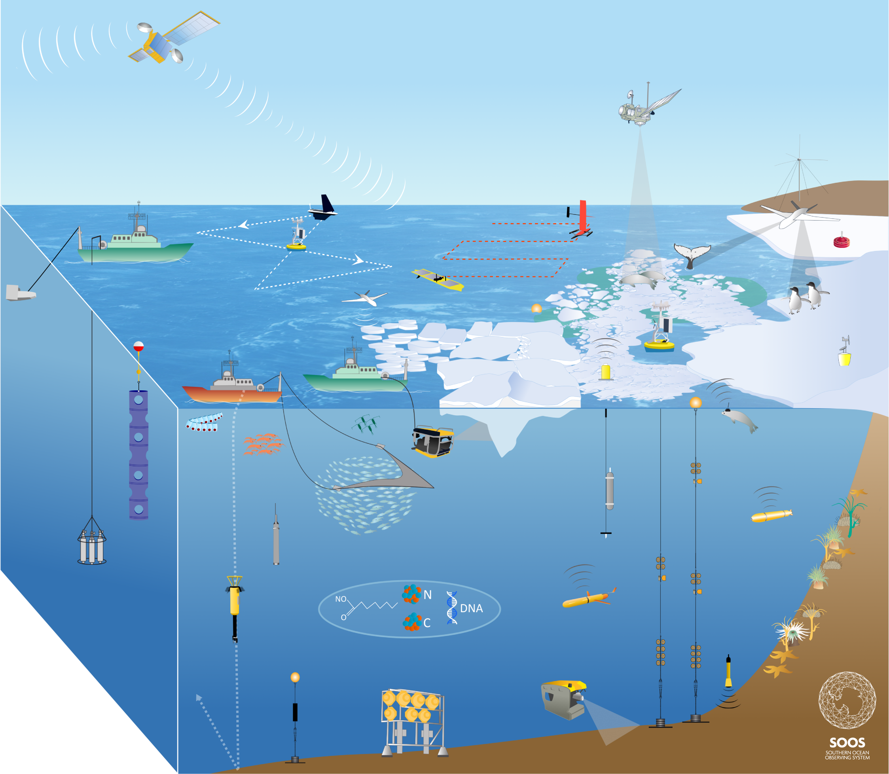
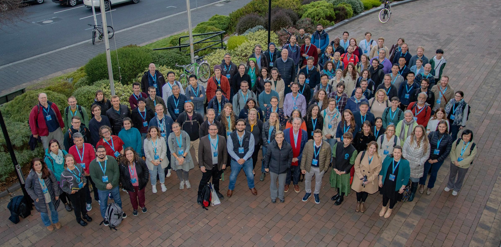
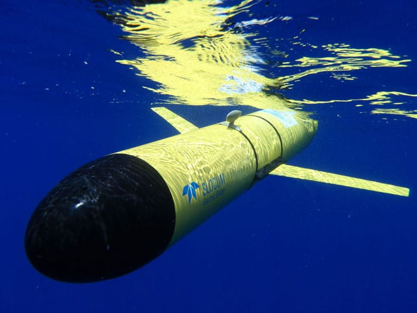

International Sothern Ocean monitoring
The Southern Ocean plays an extremely important role in the Earth's climate system, supporting the rich ecosystems of the Antarctic region, including penguins, seabirds, and whales. However, the vast and harsh environment of the Antarctic region makes it extremely difficult to collect ocean data. Additionally, under the Antarctic Treaty, territorial claims are suspended, and around 30 countries have established observation bases for scientific purposes. Therefore, international collaboration is essential for monitoring the Southern Ocean.
The Southern Ocean Observing System (SOOS), an international committee, aims to optimize the international observation system by promoting information exchange among researchers, sharing observation data and measurement techniques, and enabling research institutions from different countries to deploy observation resources dynamically. These efforts contribute to societal demands, such as more accurate future climate predictions.
Autonomy for efficient ocean monitoring - Argo floats and gliders
Autonomy has become increasingly important in ocean monitoring in recent years. Autonomous measurement instruments, such as profiling floats and gliders, are used even in icy seas, demonstrating their efficient and cost-effective ocean observation capabilities.
Profiling floats (Argo floats) drift with ocean currents, periodically descending to preset depths to measure water temperature, salinity, and other water mass properties. These data are transmitted to researchers in real-time via satellite, enabling the monitoring of the ocean's physical and chemical properties.
On the other hand, gliders are autonomous underwater robots that move and observe along programmed specific paths. They use changes in buoyancy to move up and down in the water while adjusting their direction with fixed wings, collecting data on temperature, salinity, and other properties. Like profiling floats, gliders also transmit data to researchers in real-time.
In icy seas, the use of autonomy is particularly effective. The harsh environment and remote locations from ports make data collection with traditional ship-based observations difficult and costly. Especially in the winter Antarctic ocean, it is almost impossible to reach these areas even with icebreakers. Autonomy can operate for extended periods, often several months, in icy seas, enabling continuous monitoring of the ocean over wide areas.
One of the significant advantages of autonomy in icy seas is the ability to obtain detailed information about ocean structures in regions that are difficult to measure with traditional ships (e.g., under ice shelves).
Related studies
- Yamazaki, K., Bindoff, N. L., Phillips, H. E., Nikurashin, M., Herraiz-Borreguero, L., & Spence, P. (2025). Unlocking southern ocean under-ice seasonality with a new monthly climatology. Journal of Geophysical Research: Oceans, 130, e2024JC020920.
- Yamazaki, K., Aoki, S., Shimada, K., Kobayashi, T., & Kitade, Y. (2020). Structure of the subpolar gyre in the Australian‐Antarctic Basin derived from Argo floats. Journal of Geophysical Research: Oceans, 125(8), e2019JC015406.